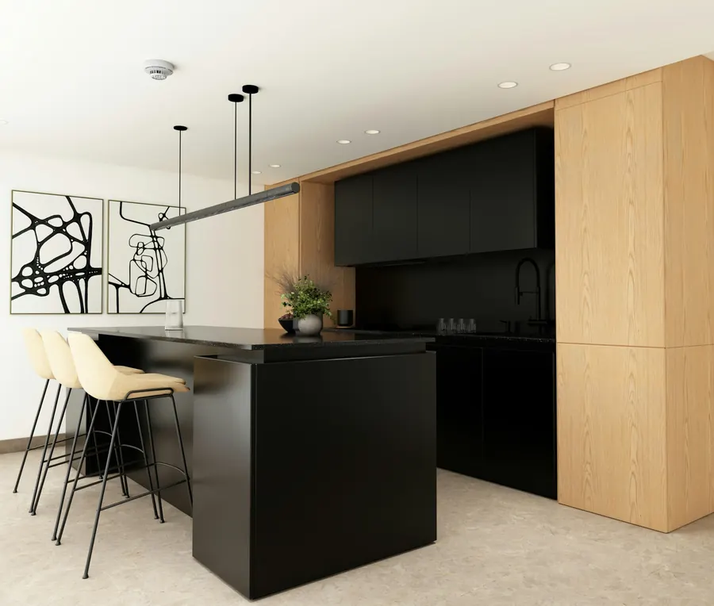

01
داكن فاخر
أسود وفحمي مع خشب البلوط أو الحجر الطبيعي.
فيوتشر كيت · الرياض
نصمم المطابخ ونصنعها ونركبها في الرياض. كل مشروع يبدأ بقياس دقيق، ويمر بتصميم تعتمده، وينتهي بتسليم مطابق.

لا نقص لوحا قبل أن تعتمد التصميم ثلاثي الأبعاد والرسومات التنفيذية.
عرض سعر مفصل بكل بند، وبمدة تنفيذ مكتوبة قبل البدء.
التصميم والتصنيع والتركيب لدى فريق واحد يعرف مشروعك من أوله.
نراجع معك كل باب ودرج وسطح قبل أن نسلمك المشروع.
الخدمات
تصميم وتفصيل المطابخ بكل أساليبها ومقاساتها.
جزر للتحضير أو الجلسة أو المغسلة، بتمديدات مخططة مسبقا.
تخزين المؤن والأجهزة الصغيرة خلف أبواب مخفية، مع منظمات للأدراج.
كوارتز وبورسلان ورخام طبيعي وجرانيت، بتفصيل في الموقع.
تخطيط أماكن الأجهزة وتوريدها وتركيبها عند الطلب.
LED أسفل الخزائن وداخل الأدراج، بحساسات حركة.
تغيير الواجهات أو الأسطح أو إعادة المخطط بالكامل.
مناظير واقعية بالخامات المختارة قبل أي تصنيع.
المجموعات
اسحب لاستعراض المجموعات. كل مجموعة قابلة للتخصيص بالكامل.

أسود وفحمي مع خشب البلوط أو الحجر الطبيعي.

أسطح واسعة بلا فواصل، وجزيرة في وسط المطبخ.

أبواب بإطار بسيط، ولون عميق، ومقابض نحاسية.

بلا مقابض ظاهرة، وأجهزة مدمجة بالكامل.

قشرة خشب طبيعي، وأسطح فاتحة، وإضاءة هادئة.
المخططات
المراحل
ترسل طلبك من الموقع، ونتواصل معك لتأكيد التفاصيل والموعد.
نزور موقعك ونأخذ المقاسات ونحدد مخارج الماء والكهرباء.
مخطط ومناظير ثلاثية الأبعاد، وتعديلات حتى الاعتماد.
اختيار العينات، وعرض سعر مفصل بالبنود ومدة التنفيذ.
تصنيع الوحدات وفق الرسومات المعتمدة، مع إطلاعك على المراحل.
تركيب في الموقع، ومراجعة كاملة معك قبل التسليم.
المعرض
صور توضيحية للأساليب والخامات التي ننفذها.
التواصل
أكمل الخطوات، ويصلنا طلبك عبر واتساب بكل التفاصيل. نتواصل معك لتأكيد موعد القياس.
الأسئلة
يعتمد على الطول الإجمالي للوحدات، ونوع الواجهات والهيكل، ونوع السطح، والإكسسوارات والإضاءة. بعد القياس واعتماد التصميم تستلم عرضا مفصلا بكل بند.
لا، تعطيك الطول الإجمالي التقريبي للجدران فقط، لتوضح لنا حجم المشروع. السعر يحدد بعد القياس واختيار الخامات.
نعم، تصميم ثلاثي الأبعاد بالخامات المختارة، ولا يبدأ التصنيع إلا بعد اعتمادك.
تختلف بحسب حجم المشروع ونوع الخامات وتوفرها، وتحدد كتابيا في عرض السعر.
الموعد الذي تختاره هو المفضل لديك، ونتواصل معك لتأكيده أو اقتراح أقرب موعد متاح.
نعم، نخطط أماكن الأجهزة في التصميم، ويمكننا توريدها وتركيبها عند الطلب، أو تركيب أجهزتك الحالية بعد مطابقة مقاساتها.